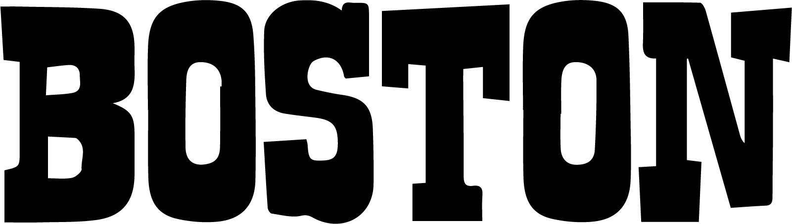

Welcome to Northeastern University in the Heart of Boston!
Nothestern
We're thrilled to have you join us on this exciting journey. Boston is not only a city steeped in history but also a place deeply committed to sustainability. Here at Northeastern, sustainability is more than a concept; it's a way of life. From eco-friendly campus initiatives to green clubs and daily sustainable habits, you'll find plenty of opportunities to be part of our commitment to a greener future. Welcome to a university where your education includes making a positive impact on the world around you.
The Red Bull Music Academy does not seek to select or create “stars,” [15] instead bringing together music makers with a wide range of talents, skill levels and cultural backgrounds. Notable former participants include Aloe Blacc, Branko of Buraka Som Sistema, Bahrainian oud player Hasan Hujairi, Juan Son, Natalia Lafourcade, Nina Kraviz, David Eriksson of Teenage Engineering, Blackcoffee, Flying Lotus, Salva and Andreya Triana.
The Academy also publishes a yearly double-CD compilation of music produced at the respective last edition entitled Various Assets — Not For Sale. Since 2004, those compilations have featured original music from more than 300 artists, including Dorian Concept, Flying Lotus, Lusine, Theo Parrish, Aloe Blacc, Mark Pritchard, XXXchange, Om’Mas Keith of Sa-Ra, Illuminated faces, Tony Allen, Mr Hudson, Dennis Coffey, Hudson Mohawke, DJ Zinc, Wally Badarou, Benga, Phonte, Jake One, Steve Spacek of Spacek, and Natalia Lafourcade.

The Red Bull Music Academy hosts additional workshops and three-day Base Camp sessions in more than 60 countries every year. These events resemble the actual Academy in consisting of music lectures, hands-on production workshops, studio sessions, art exhibitions, and night time activities such as concerts and club events.[16] There is a strong focus on local topics as well as an international perspective.